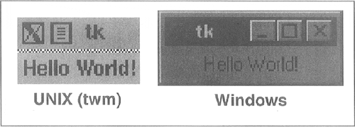
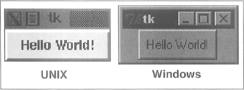
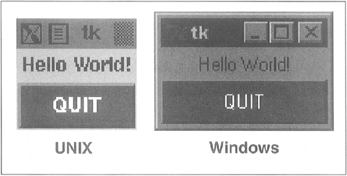
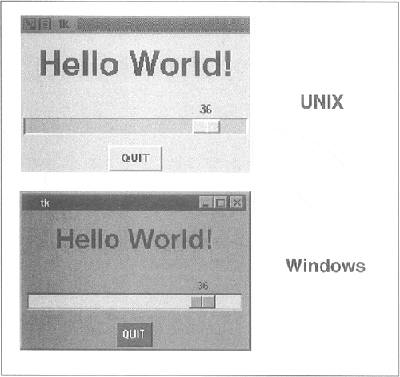
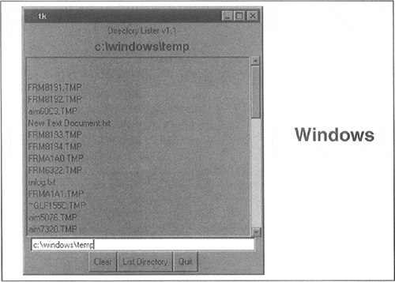
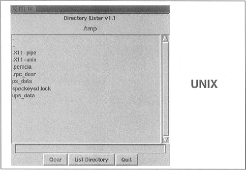

| < BACK | Make Note | Bookmark | CONTINUE > |
Tkinter Examples
Label Widget
In Example 18.1, we present tkhello1.py, the Tkinter version of "Hello World!" In particular, it shows you how a Tkinter application is set up and highlights the Label widget
Example 18.1. Label Widget Demo (tkhello1.py)
Our first Tkinter example is… what else? "Hello World!" In particular, we introduce our first widget, the Label.
<$nopage> 001 1 #!/usr/bin/env python 002 2 003 3 import Tkinter 004 4 005 5 top = Tkinter.Tk() 006 6 label = Tkinter.Label(top, text='Hello World!') 007 7 label.pack() 008 8 Tkinter.mainloop() 009 <$nopage>
In the first line, we create our top-level window. That is followed by our Label widget containing the all-too-famous string. We instruct the packer to manage and display our widget, and finally call mainloop() to run our GUI application. Figure18-1 shows what you will see when you run this GUI application.
Figure 18-1. Tkinter Label Widget (tkhello1.py)
Button Widget
The next example is pretty much the same as the first. However, instead of a simple text label, we will create a button instead. In Example 18.2 is the source code for tkhello2.py:
Example 18.2. ButtonWidget Demo (tkhello2.py)
This example is exactly the same as tkhello1.py except that rather than using a Label widget, we create a Button widget.
<$nopage> 001 1 #!/usr/bin/env python 002 2 003 3 import Tkinter 004 4 005 5 top = Tkinter.Tk() 006 6 quit = Tkinter.Button(top, text='Hello World!', 007 7 command=top.quit) 008 8 quit.pack() 009 9 Tkinter.mainloop() 010 <$nopage>
The first few lines are identical. Things differ only when we create the Button widget. Our button has one additional parameter, the Tkinter.quit() method. This installs a callback to our button so that if it is pressed (and released), the entire application will exit. The final two lines are the usual pack() and entering of the mainloop(). This simple button application is shown in Figure18-2.
Figure 18-2. Tkinter Button Widget (tkhello2.py)
Label and Button Widgets
We combine tkhello1.py and tkhello2.py into tkhello3.py, a script which has both a label and a button. In addition, we are providing more parameters now than before when we were comfortable using all the default arguments which are automatically set for us. The source for tkhello3.py is given in Example 18.3.
Example 18.3. Label and Button Widget Demo (tkhello3.py)
This example features both a Label and a Button widget. Rather than primarily using default arguments when creating the widget, we are able to specify more now that we know more about Button widgets and how to configure them.
<$nopage> 001 1 #!/usr/bin/env python 002 2 003 3 import Tkinter 004 4 top = Tkinter.Tk() 005 5 006 6 hello = Tkinter.Label(top, text='Hello World!') 007 7 hello.pack() 008 8 009 9 quit = Tkinter.Button(top, text='QUIT', 010 10 command=top.quit, bg='red', fg='white') 011 11 quit.pack(fill=Tkinter.X, expand=1) 012 12 013 13 Tkinter.mainloop() 014 <$nopage>
Besides additional parameters for the widgets, we also see some arguments for the packer. The fill parameter tells the packer to let the QUIT button take up the rest of the horizontal real estate, and the expand parameter directs the packer to visually fill out the entire horizontal landscape, stretching the button to the left and right sides of the window.
As you can see in Figure18-3, without any other instructions to the packer, the widgets are placed vertically (on top of each other). Horizontal placement requires creating a new Frame object with which to add the buttons. That frame will take the place of the parent object as a single child object (see the buttons in the listdir.py module, Example 18.5 in Section 18.3.5).
Figure 18-3. Tkinter Label and Button Widgets (tkhello3.py)
Label, Button, and Scale Widgets
Our final trivial example, tkhello4.py, involves the addition of a Scale widget. In particular, the Scale is used to interact with the Label widget. The Scale slider is a tool which controls the size of the text font in the Label widget. The greater the slider position, the larger the font, and the same goes for a lesser position, meaning a smaller font. The code for tkhello4.py is given in Example 18.4.
New features of this script include a resize() callback function (lines 5–7), which is attached to the Scale. This is the code that is activated when the slider on the Scale is moved, resizing the size of the text in the Label.
We also define the size (250×150) of the top-level window (line 10). The final difference between this script and the first three is that we import the attributes from the Tkinter module into our namespace with "from Tkinter import *." This is mainly due to the fact that this application is larger and involves a large number of references to Tkinter attributes, which would otherwise require their fully-qualified names. The code is shortened a bit and perhaps may not wrap as many lines without importing all the attributes locally.
Example 18.4. Label, Button, and Scale Demo (tkhello4.py)
Our final introductory widget example introduces the Scale widget and highlights how widgets can "communicate" with each other using callbacks [such as resize()]. The text in the Label widget is affected by actions taken on the Scale widget.
<$nopage>
001 1 #!/usr/bin/env python
002 2
003 3 from Tkinter import * <$nopage>
004 4
005 5 def resize(ev=None):
006 6 label.config(font='Helvetica -%d bold' % \
007 7 scale.get())
008 8
009 9 top = Tk()
010 10 top.geometry('250×150')
011 11
012 12 label = Label(top, text='Hello World!',
013 13 font='Helvetica -12 bold')
014 14 label.pack(fill=Y, expand=1)
015 15
016 16 scale = Scale(top, from_=10, to=40,
017 17 orient=HORIZONTAL, command=resize)
018 18 scale.set(12)
019 19 scale.pack(fill=X, expand=1)
020 20
021 21 quit = Button(top, text='QUIT',
022 22 command=top.quit, activeforeground='white',
023 23 activebackground='red')
024 24 quit.pack()
025 25
026 26 mainloop()
027 <$nopage>
As you can see from Figure18-4, both the slider mechanism as well as the current set value show up in the main part of the window.
Figure 18-4. Tkinter Label, Button, and Scale Widgets (tkhello4.py)
Intermediate Tkinter Example
We conclude this section with a larger example, listdir.py. This application is a directory tree traversal tool. It starts in the current directory and provides a file listing. Double-clicking on any other directory in the list causes the tool to change to the new directory as well as replace the original file listing with the files from the new directory. The source code is given below as Example 18.5.
Example 18.5. File System Traversal GUI (listdir.py)
This slightly more advanced GUI expands on the use of widgets, adding listboxes, text entry fields, and scrollbars to our repertoire. There are also a good number of callbacks such as mouse clicks, key presses, and scrollbar action.
<$nopage>
001 1 #!/usr/bin/env python
002 2
003 3 import os
004 4 from time import sleep
005 5 from Tkinter import * <$nopage>
006 6
007 7 class DirList:
008 8
009 9 def __init__(self, initdir=None):
010 10 self.top = Tk()
011 11 self.label = Label(self.top,
012 12 text='Directory Lister' + ' v1.1')
013 13 self.label.pack()
014 14
015 15 self.cwd=StringVar(self.top)
016 16
017 17 self.dirl = Label(self.top, fg='blue',
018 18 font=('Helvetica', 12, 'bold'))
019 19 self.dirl.pack()
020 20
021 21 self.dirfm = Frame(self.top)
022 22 self.dirsb = Scrollbar(self.dirfm)
023 23 self.dirsb.pack(side=RIGHT, fill=Y)
024 24 self.dirs = Listbox(self.dirfm, height=15,
025 25 width=50, yscrollcommand=self.dirsb.set)
026 26 self.dirs.bind('<Double-1>', self.setDirAndGo)
027 27 self.dirsb.config(command=self.dirs.yview)
028 28 self.dirs.pack(side=LEFT, fill=BOTH)
029 29 self.dirfm.pack()
030 30
031 31 self.dirn = Entry(self.top, width=50,
032 32 textvariable=self.cwd)
033 33 self.dirn.bind('<Return>', self.doLS)
034 34 self.dirn.pack()
035 35
036 36 self.bfm = Frame(self.top)
037 37 self.clr = Button(self.bfm, text='Clear',
038 38 command=self.clrDir,
039 39 activeforeground='white',
040 40 activebackground='blue')
041 41 self.ls = Button(self.bfm,
042 42 text='List.Directory',
043 43 command=self.doLS,
044 44 activeforeground='white',
045 45 activebackground='green')
046 46 self.quit = Button(self.bfm, text='Quit',
047 47 command=self.top.quit,
048 48 activeforeground='white',
049 49 activebackground='red')
050 50 self.clr.pack(side=LEFT)
051 51 self.ls.pack(side=LEFT)
052 52 self.quit.pack(side=LEFT)
053 53 self.bfm.pack()
054 54
055 55 if initdir:
056 56 self.cwd.set(os.curdir)
057 57 self.doLS()
058 58
059 59 def clrDir(self, ev=None):
060 60 self.cwd.set('')
061 61
062 62 def setDirAndGo(self, ev=None):
063 63 self.last = self.cwd.get()
064 64 self.dirs.config(selectbackground='red')
065 65 check = self.dirs.get(self.dirs.curselection())
066 66 if
067 not check:
068 67 check = os.curdir
069 68 self.cwd.set(check)
070 69 self.doLS()
071 70
072 71 def doLS(self, ev=None):
073 72 error = ''
074 73 tdir = self.cwd.get()
075 74 if
076 not tdir: tdir = os.curdir
077 75
078 76 if
079 not os.path.exists(tdir):
080 77 error = tdir + ': no such file'
081 78 elif
082 not os.path.isdir(tdir):
083 79 error = tdir + ': not a directory'
084 80
085 81 if error:
086 82 self.cwd.set(error)
087 83 self.top.update()
088 84 sleep(2)
089 85 if not (hasattr(self, 'last') \
090 86 and self.last):
091 87 self.last = os.curdir
092 88 self.cwd.set(self.last)
093 89 self.dirs.config(\
094 90 selectbackground='LightSkyBlue')
095 91 self.top.update()
096 92 return <$nopage>
097 93
098 94 self.cwd.set(\
099 95 'FETCHING DIRECTORY CONTENTS…')
100 96 self.top.update()
101 97 dirlist = os listdir(tdir)
102 98 dirlist sort()
103 99 os.chdir(tdir)
104 100 self.dirl.config(text=os.getcwd())
105 101 self.dirs.delete(0, END)
106 102 self.dirs.insert(END, os.curdir)
107 103 self.dirs.insert(END, os.pardir)
108 104 for eachFile in dirlist:
109 105 self.dirs.insert(END, eachFile)
110 106 self.cwd.set(os.curdir)
111 107 self.dirs.config(\
112 108 selectbackground='LightSkyBlue')
113 109
114 110 def main():
115 111 d = DirList(os.curdir)
116 112 mainloop()
117 113
118 114 if __name__ == '__main__':
119 115 main()
120 <$nopage>
In Figure18-5, we present what this GUI looks like in a Windows environment:
Figure 18-5. List Directory GUI Application in Windows (listdir.py)
The Unix version of this application is given in Figure18-6.
Figure 18-6. List Directory GUI Application in UNIX (listdir.py)
Line-by-line explanation
Lines 1–5
These first few lines contain the usual Unix start-up line and importation of the os module, the time.sleep() function, and all attributes of the Tkinter module.
Lines 9–13
These lines define the constructor for the DirList class, an object which represents our application. The first Label we create contains the main title of the application and the version number.
Lines 15–19
We declare a Tk variable named cwd to hold the name of the directory we are on—we will see where this comes in handy later. Another Label is created to display the name of the current directory.
Lines 21–30
This section defines the core part of our GUI, the Listbox dirs, which contain the list of files of the directory that is being listed. A Scrollbar is employed to allow the user to move through a listing if the number of files exceeds the size of the Listbox. Both of these widgets are contained in a Frame widget. Listbox entries have a callback (setdirandgo) tied to them using the Listbox bind() method.
Binding means to tie a keystroke, mouse action, or some other event to a call back to be executed when such an event is generated by the user. setdirandgo() will be called if any item in the Listbox is doubleclicked. The Scrollbar is tied to the Listbox by calling the Scrollbar.config() method.
Lines 32–35
We then create a text Entry field for the user to enter the name of the directory he or she wants to traverse to and see its files listed in the Listbox. We add a RETURN or Enter key binding to this text entry field so that the user can hit RETURN as an alternative to pressing a button. The same applies for the mouse binding we saw above in the Listbox. When the user doubleclicks on a Listbox item, it has the same effect as the user's entering the directory name manually into the text Entry field and pressing the "go" button.
Lines 37–54
We then define a Button frame (bfm) to hold our three buttons, a "clear" button (clr), "go" button (ls), and a "quit" button (quit). Each button has its own different configuration and callbacks, if pressed.
Lines 56–58
The final part of the constructor initializes the GUI program, starting with the current working directory.
Lines 60–61
The clrDir() method clears the cwd Tk string variable, which contains the current directory which is "active." This variable is used to keep track of what directory we are in and, more importantly, helps keep track of the previous directory in case errors arise. You will notice the ev variables in the callback functions with a default value of None. Any such values would be passed in by the windowing system. They may or may not be used in your callback.
Lines 63–71
The setDirAndGo() method sets the directory to traverse to and issues the call to the method that makes it all happen, doLS().
Lines 73–108
doLS() is, by far, the key to this entire GUI application. It performs all the safety checks (e.g., is the destination a directory and does it exist?). If there is an error, the last directory is reset to be the current directory. If all goes well, it calls os.listdir() to get the actual set of files and replaces the listing in the Listbox. While the background work is going on to pull in the new directory's information, the highlighted blue bar becomes a bright red. When the new directory has been installed, it reverts to blue.
Lines 110–115
The last pieces of code in listdir.py represent the main part of the code. main() is executed only if this script is invoked directly, and when main() runs, it creates the GUI application, then calls mainloop() to start the GUI, which is passed control of the application.
We leave all other aspects of the application as an exercise to the reader, recommending that it is easier to view the entire application as a combination of a set of widgets and functionality. If you see the individual pieces clearly, then the entire script will not appear as daunting.
We hope that we have given you a good introduction to GUI programming with Python and Tkinter. Remember that the best way to get familiar with Tkinter programming is by practicing and stealing a few examples! The Python distribution comes with a large number of demonstration applications (see the Demo directory) that you can study. And as we mentioned earlier, there is also an entire text devoted to Tkinter programming.
One final note: do you still doubt the ability of Tkinter to produce a commercial application? Take a close look at IDLE. IDLE itself is a Tkinter application (written by Guido)!
| Last updated on 9/14/2001 Core Python Programming, © 2002 Prentice Hall PTR |
| < BACK | Make Note | Bookmark | CONTINUE > |